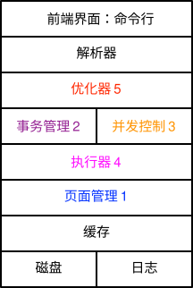

实验框架整体设计说明
层级划分
实验框架设计上的整体架构按照各次实验内容进行了层次划分，从底层的操作系统级别的页式文件管理到顶层的 SQL 命令行交互，主要可以划分为如下的层级结构。

上述图片中模块后编号表示对应的实验编号。 此处按照实验设计的顺序简单介绍各个模块的主要功能： 0. 缓存和磁盘：底层缓存和磁盘管理，支持类 UNIX 操作系统（Linux + Mac），不支持 Windows 操作系统。
- 日志：仅负责存储日志信息。
- 记录管理：负责数据库系统中关系内记录的管理，实现了对于表(Table)，记录(Record)，以及字段(Field)等数据库系统基本组成部分的抽象，同时负责处理这些基本组成部分的到实际物理页面的序列化和反序列化。
- 事务管理：负责日志的解析以及在基于日志的自动恢复等操作，需要负责处理事务重做和事务回滚。
- 执行器：基于火山模型设计的简单执行器，基于上层给出的执行计划树完成查询的实际执行过程。
- 优化器：接收解析器的语法分析树，经过逻辑优化和物理优化过程转化为执行计划树。
- 并发控制：负责多个事务并发进行情况下的执行过程控制，管理锁和记录的多版本信息。
- 解析器：SQL 语法解析，将原始 SQL 转化为语法分析树。
- 前端命令行：负责用户交互，实时接收 SQL 语句输入并给出查询结果的输出
SQL 整体运行流程

如图所示，系统整体的工作流程主要可以概括为如下几个子过程：
- SQL 解析：将原始 SQL 查询语句转化为抽象语法树
- 优化器：对于抽象语法树进行逻辑优化和物理优化过程，生成执行计划树
- 执行器：按照火山模型完成执行计划树，通过不同算子实现对于页面数据的访问和修改
功能模块划分
实验框架的源代码按照功能模块进行组织，此处按照各次实验中涉及的各个功能模块进行简单介绍：
LAB 1 记录管理
record 模块
实现了记录(Record)和字段(Field)类型，实现了包括反序列化(Load)、序列化(Store)等基本函数。
table 模块
实现了表(Table)类型，表结构包含表的元信息(TableMeta)以及页面文件组成的实际存储数据。通过 PageHandle 类可以实现物理页面的无格式数据到格式化记录的转化和操作。同时，可以通过配置隐藏列的方式向数据表中存储声明字段外的额外字段、例如后续实验中需要使用的记录标识(RID)、版本号(VERSION)、锁状态(WR_LOCK)等。
LAB 2 事务与日志
log 模块
实现了日志(Log)的序列化和解析，采用物理日志的方式记录数据变化。管理事务的 REDO 和 UNDO 过程。同时需要管理日志数据的组织和持久化过程，对于 LAB 1 实验没有影响。
storage 模块
底层缓存、磁盘的管理，由于缓存数据保存在内存中，需要结合日志模块以及磁盘保证写入数据的持久性。
LAB 3 并发控制
整体性的功能添加，本次实验中没有设计单独的独立功能模块。
LAB 4 执行器
exec 模块
执行器模块，包装了简单的执行器模型。对于每个事务建立新的执行器并记录基本的元信息，管理算子实际执行过程。
oper 模块
实现了抽象类算子结点(OperNode)，算子结点组织成树结构可以构成执行计划树，通过实现不同算子结点的 Next 函数，可以实现以向量化模型为基础的执行引擎。
LAB 5 优化器
optim 模块
实现了优化器(Optimizer)，对于上层 visitor 解析的抽象语法树进行逻辑优化和物理优化两个过程，形成高效的执行计划交由底层执行引擎进行处理。
其余模块
utils 模块
一些常用的数据结构，此处给出了并查集(UFSet)以及位图(Bitmap)。
result 模块
用于查询结果的输出，包含记录头和记录内容。
system 模块
数据库管理模块，主要实现了元信息的管理。
parser 模块
解析器模块，将 SQL 语句转化为抽象语法树。
Extra
cli.cpp 为主程序入口。defines.h 是通用头文件，可以将常量值和常用的类型声明置于该文件内。